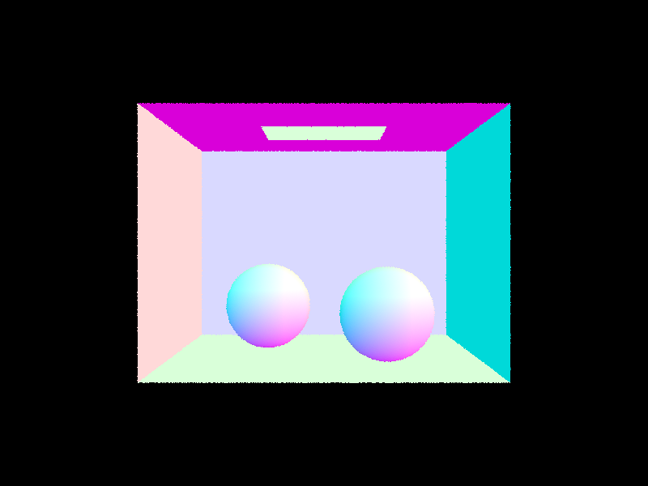
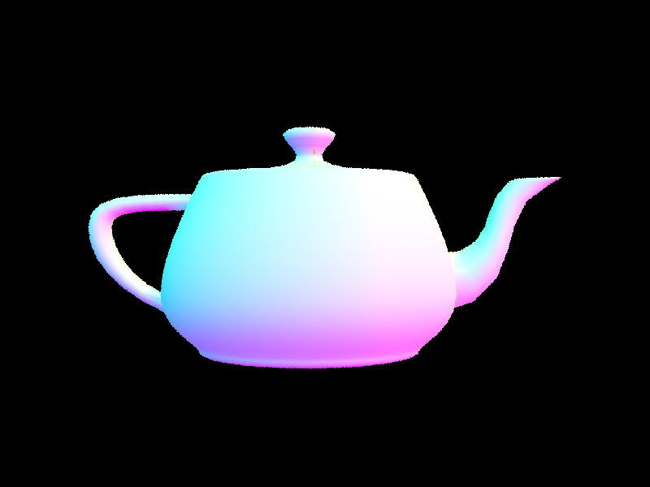
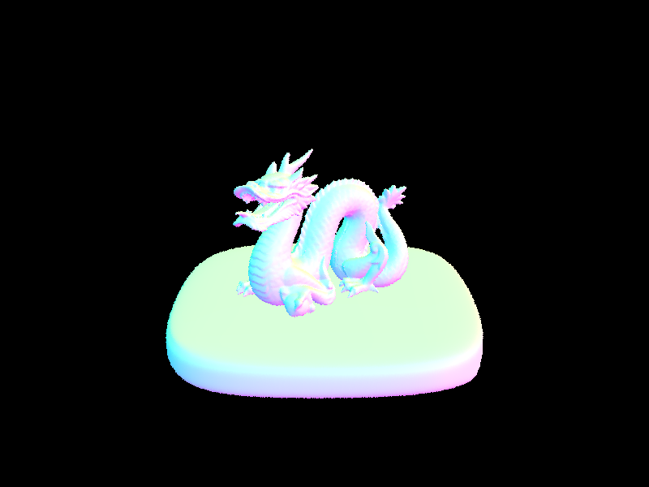
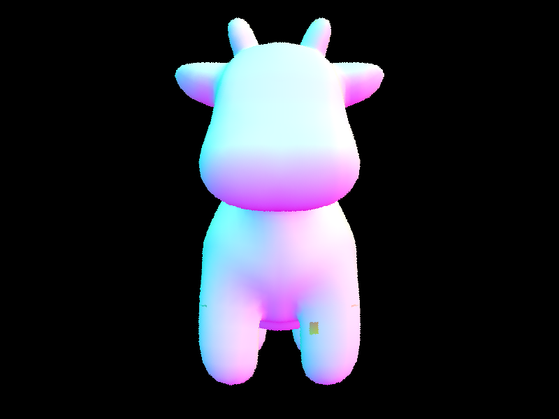
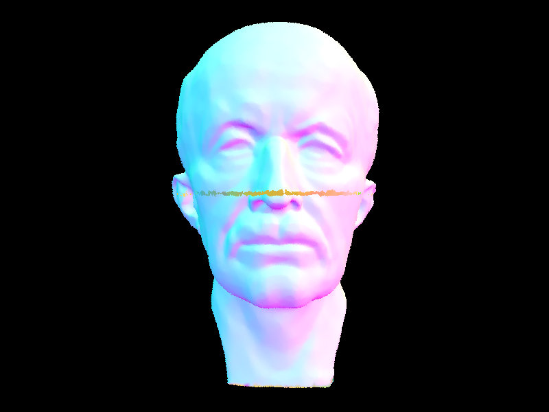
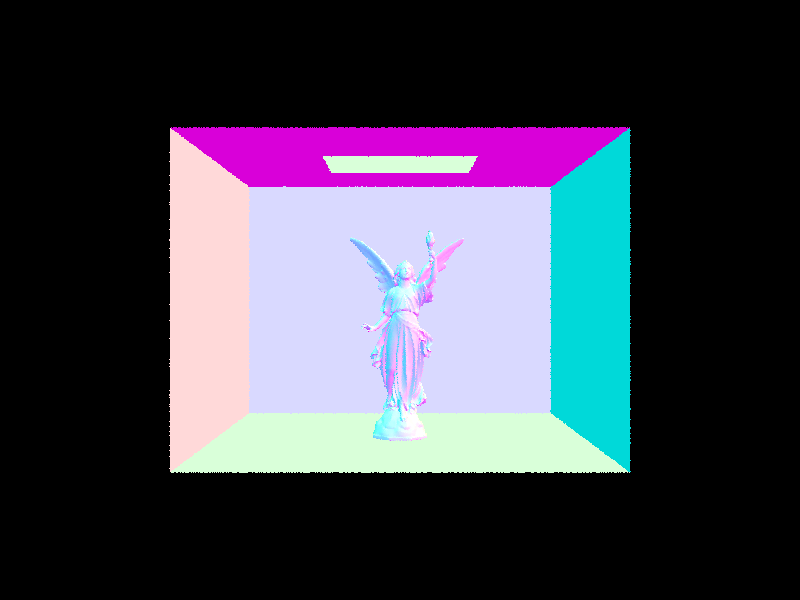

We ran into many problems with rendering where we only saw black screens. For part 2, we were able solve this. For part 3, we were unable to solve this. We set breakpoints for debugging as well as used print statements to see where we were going wrong. We also ran into issues with yellow spheres in CBspheres, a yellow square on the cow, and a yellow line across max planck. We fixed the yellow spheres by fixing the t1 and t2 implementation in sphere's test function. We were unable to fix the cow and max planck bugs.
In this project, we approached the parts and tasks by following the spec, lecture slides, and piazza threads. When we ran into issues that we got stuck on, we posted on piazza or attended OH. Unfortunately we could not resolve everything.
Overall, we learned a lot about rendering as well as the entire rendering pipeline as a whole, from ray generation to ray intersection and BVH, illumination and so on.
To generate a ray, we referenced the provided diagram to calculate the corners of the camera space. Then, we found the width and height of the camera space and utilized it in converting the image space coordinates to camera space coordinates. Essentially, we performed a scale and translation. We also needed to normalize the ray. For primitive intersection, we followed the formulas presented on the lecture slides. For ray-sphere intersection, we had to use the quadratic formula and had to check whether the solutions were valid and whether they were in the bounding box. We did ray-triangle intersection as described below:
For our triangle intersection algorithm, we utilized the Moller Trumbore algorithm. Essentially, we were able to find t as well as the barycentric coordinates using the formulas on the points of the triangle and the ray. After finding t, we checked to ensure that it was inside the bounding box. Then, since we know that in order for a point to be within a triangle, its barycentric coordinates must be nonnegatie, so we checked that before returning true.
Images with normal shading:
  The BVH construction was done recursively, by starting at the root and recursing on the left and right children of each node. We checked the base case, whether the node was a leaf node, by seeing if its distance from start to end was less than max_leaf_size. If it was a leaf, we simply added all the primitives into a bbox and created a new node from that bbox. For non-leaf nodes, we had to determine how to split into left and right, by finding the split centroid from the mean of all the bboxes centroids, and then finding the longest axis. We then split on this longest axis of the split centroid. In addition, we performed checks to make sure that the split was decreasing the nubmer of primitives in each node.
Our heuristic for choosing the splitting point was the average of centroids along the axis with the largest extent.
Rendering time anaylsis:
With BVH acceleration, rendering cow.png took 0.6711s. Without BVH, it took 39.12s. Thus, with BVH, it is much faster, which makes sense, since with BVH, we can first check if the ray intersects the bounding box and stop early if it doesn't intersect the bbox. Otherwise, it would need to do complex ray-primtive intersection calculations for every sample, which is very expensive.
Images with BVH acceleration:
  To perform adaptive sampling, we added checks for convergence periodically. If we detected convergence, we updated the sampleBuffer and returned(null). The formula we used for convergence was if I <= maxTolerance * mean. We only calculated the most recent mean and variance and did the check every 32 samples.
https://cal-cs184-student.github.io/sp22-project-webpages-jumony/proj3-1/index.html